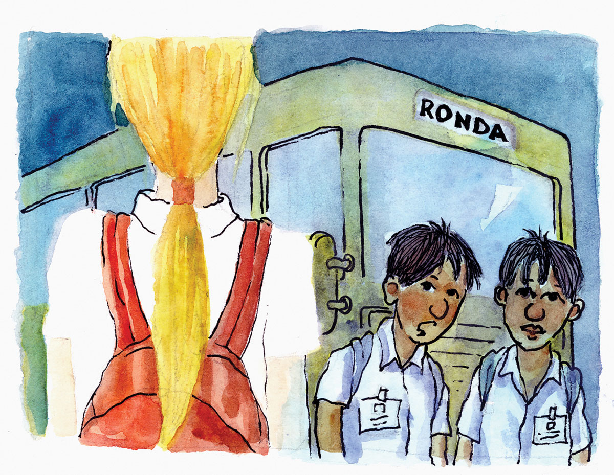
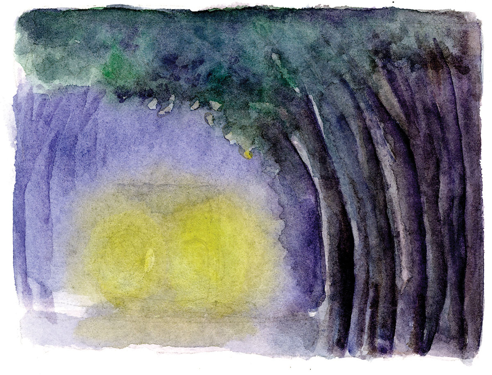

Kinsa si Carmen Rubia?
Kaniadtong dekada ’70, adunay duha ka mga batan-ong lalake nga nibutho dinhi sa Ronda. Sa ilang pakighinabi ni Marcos Albero nga maoy nag-asoy sa mga panghitabo ning tagsulat, nangita sila sa usa ka babaye nga gihinganlag Carmen Rubia nga ilang gikaila-ila didto sa South Bus Terminal usa ka Biyernes sa hapon samtang nagpaabot og sakyanan pauli sa Ronda human sa iyang klase sa usa ka tunghaan sa dakbayan sa Sugbu.
Ang duha ka mga batan-on mag-agaw igtagsa ug mga taga Bohol nga pulos nagtungha sa dakbayan sa Sugbo. Hapon na nga niabot ang duha sa Ronda sakay sa usa ka trak pasaheroan. Nanaug sila tungod gayud sa simbahang Katoliko sa maong lungsod sumala sa sugyot sa babayeng ilang gikaila nga ang ilang balay ana-a mahimutang atbang gayud sa simbahan.
Dakung kahibulong sa duha dihang wala sila’y nakita nga balay atbang sa simbahan gawas sa dakong rebulto sa Birhen sa Mt. Carmel. Ang rebulto nagtungtong sa bato nga kolor rubi ug sa luyo niini nagbuntaog ang dakung punoan sa akasya nga giatiman sa lungsod isip Centennial Tree. Sa unahan pa gayud mao ang pantalan sa Ronda.
Human sa ilang pakyas nga pakisusi sa palibut nakahukom sila sa pagpamauli na lang sa dakbayan. Didto sila magpaabot og sakyanan daplin sa highway tungod sa panimalay ni Marcos Albero, ambihas og diutay sa simbahan tungod gayud sa dakong punoan sa akasya nga may mya 30 metros gikan sa ilang nahimutangan.
Takulahaw ilang naaninaw duol sa punoan sa akasya ang babayeng ilang gipangita nga nagpangamay kanila. Misamot kini kaanyag sa gisul-ob nga lunhaw-pula nga sinina, samtang ang bulawanong buhok niini giduyan-duyan sa saag nga huyohoy gikan sa baybayon.
Sa dili matukib nga kalipay naglumba ang duha padulong sa nahimutangan sa babaye, apan dihang duol na sila niini, kalit kining nikaratil og dagan padulong sa pantalan nga nagkatawa. Mingaw kaayo ang pantalan niadtong tungora kay bag-o pa lang nakalarga ang mga pasahero sa lansa paingon sa Guihulngan, Isla sa Negros nga gikatakdang mobiya sa pantalan sa Ronda sa dili pa motikyop ang kagabhion ug mobalik pagkasunod buntag.
Mihunong ang babaye pag-abot sa tumoy sa pantalan ug mihuyatid sa buot makig-indig sa katahom sa kinaiyahan nga niadtong tungora gitina sa banag-banag sa balaknong kahaponon. Dihang ila na untang hangpon ug pangumustahon ang maong babaye kalit nga mihuros ang usa ka makusog nga unos nga maoy nakapabalik kanila sa agi. Mialimbukad ug naputos sa abog ang palibot. Ug sa paglurang sa unos wala na diha ang babaye.
Pasado alas sais na sa hapon nga nibalik ang duha daplin sa highway tungod sa balay ni Marcos Albero, nga niadtong higayuna, nagpaso sa iyang mga tanom sulod sa ilang laguerta. Ug kay wala na may biyahe padulong sa Sugbo nadtong orasa, gidapit sila sa naulahi sa pagpalabay sa kagabhion sa panimalay niini aron makasakay sa unang biyahe pagka kadlawon. Didto ilang nasayran nga si Carmen Rubia usa ka diwata nga gituohang nagpuyo sa dakong kahoy nga akasya ang matag karon ug unya motiaw sa mga tawo.
Hangtod niining higayona, adunay mga trisikad drayber nga naghinugilon nga sa mga gabiing mamingaw adunay mohunong nga trak pasaheroan gikan sa dakbayan tungod gayod sa dakong punuan sa akasya apan wala silay makita nga manaog sa dihang ila na untang tagboon.
Si Abdon Ogario, usa ka retirado nga drayber nga hilig magpalabay sa kagabhion sa pagpamasol ug ibis ug uban pang matang sa gagmay’ng isda sa pantalan, miasoy nga usa ka madulom ug mamingaw nga kagabhion samtang siya rang usa ang nagtikaw-tikaw sa pantalan, wala gayuy mitukbil sa iyang paon mga duha ka oras ang milabay.
Nakahukom na lang siya pagpauli kay mikisdum na ang langit ug sa dili madugay ingon sa mobundak na ang ulan. Apan sa takulahaw may mibira sa iyang pasol, ug sa iyang pagsanit, iyang nakita pinaagi sa sugang dagitabnon gikan sa poste sa iyang luyo ang usa ka putos nga Vetsin nga nagtulilik tumoy sa iyang pasol. Ug kay dili man taslakan nga pagkatawo, iyang gitangtang ang Vetsin gikan sa iyang taga, ug giitsa ug balik sa dagat ang iyang pasol. Apan sa ikaduhang higayon Vetsin lang gihapon ang midawi sa iyang taga.
Niining higayuna, namulong na si Abdon pinaagi sa pag-ingon; “Wala lang tay hilabtanay kay wala man ko nanghilabot kaninyo, gawas pa iya-iya man ang atong pagpakabuhi ning kalibutan.” Human niadto, nangalimyon sa kahumot ang palibot ug nitungha ang usa ka maanyag nga babaye sa iyang atubangan ug namulong, “Dili namo tuyo ang pagdulot og kabalisa sa tawo, apan gusto lang namo nga ipahibalo nga niining kalibutan adunay kaabag ang tawo sa pag-amuma sa pag-atiman sa kalikupan aron aduna pa’y luna nga kapuy-an ang umaabot nga kaliwatan.”
Human niadto inanay nga nahanaw ang babaye samtang si Abdon mipadayogdog sa pag-uli nga naghambin sa dili matukib nga gumunhap nga naghasol uyamot sa iyang alimpatakan.
Si Padre Diosdado Isobal, kura paroko sa Ronda sa tuig 1981-1986, misugilon sa Consejo sa Ronda human sa tinuig nga pangolin, nga usa ka higayon dihang umaabot pa ang tinuig nga pangilin sa mahal nga Patron, Birhen sa Kasakit, samtang naproblema siya sa pundo nga salapi alang sa pag-adurno sa simbahan ug sa palibot niini, nisulod sa kumbento ang usa ka matahom nga babaye nga sukad mao pa’y iyang pagkakita ug mitunol kaniya og sobre nga naay sulod nga salapi nga sobra pa kaayo sa iyang panginahanglan. Dihang iyang gipangutana kon kinsa ang iyang pangalan, nihangyo kini nga dili lang ipahibalo, gawas nga siya usa ka parokyano ug nagpuyo dili halayo sa simbahan.
Adunay uban nga nagtuo nga ang rebulto sa Mahal nga Birhen sa Mt. Carmel nga naa atbang sa simbahan, mao si Carmen Rubia. Apan alang sa kinabag-an sa mga Rondahanon, ang pangalang Carmen Rubia mao usa ka gumunhap nga magpabilin nga usa ka tanghag hangtod sa umaabot pa nga henerasyon.